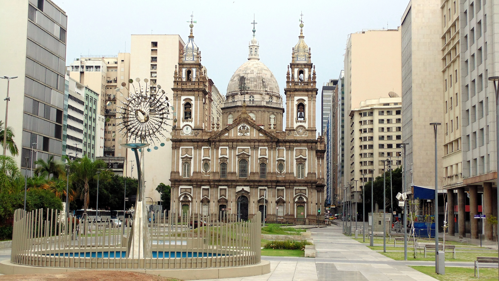
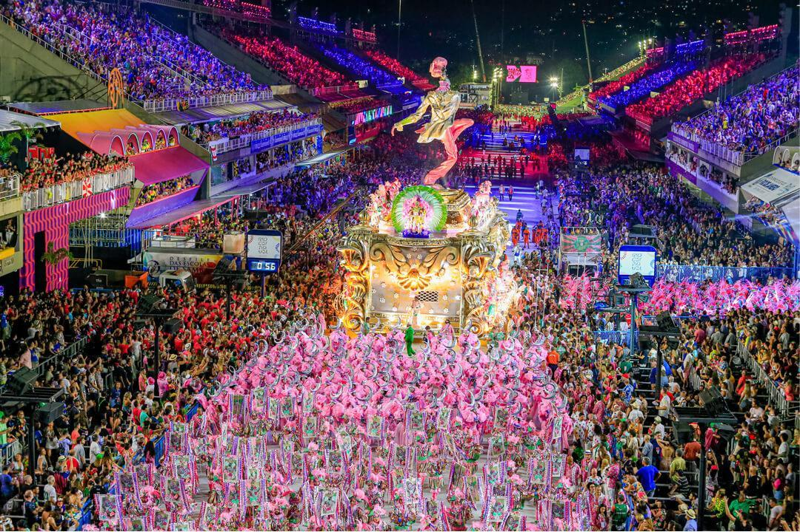

Esplora Rio de Janeiro interattivamente
Esplora Rio de Janeiro interattivamente

Scopri il fascino senza tempo di Rio de Janeiro, la leggendaria "Cidade Maravilhosa", una città incastonata tra il blu dell'Oceano Atlantico e le montagne tropicali. Fondata il 1º marzo 1565 dai portoghesi come avamposto difensivo nella Baia di Guanabara, Rio si trasformò presto da piccolo presidio militare a uno dei principali centri culturali e commerciali dell'America del Sud. Le sue strade polverose, percorse da mercanti e marinai, videro nascere una società vivace, intreccio di tradizioni europee, africane e indigene.
Con la scoperta delle miniere d’oro e diamanti nel Minas Gerais nel XVIII secolo, Rio divenne la principale via d’uscita verso l’Europa per queste ricchezze. Questo sviluppo portò Rio a diventare capitale del Brasile nel 1763, anticipando l’arrivo della corte portoghese nel 1808, in fuga dalle truppe napoleoniche. Per un breve ma significativo periodo, Rio fu l'unica capitale europea fuori dall'Europa, trasformandosi in una città regale, abbellita da palazzi, teatri e biblioteche che ancora oggi raccontano una stagione di splendore e innovazione urbana.
Modernizzazione, Icone Mondiali e L’Anima della Cidade Maravilhosa

Nel corso del XIX e XX secolo, Rio de Janeiro si modernizzò rapidamente, divenendo un simbolo della crescita brasiliana. La creazione di ampi boulevard come Avenida Rio Branco, l'inaugurazione del Porto di Rio e la costruzione di eleganti quartieri come Flamengo e Botafogo ridisegnarono il volto della città. Monumenti iconici come il Cristo Redentore, completato nel 1931 sul Corcovado, e il Pan di Zucchero divennero simboli eterni di una città capace di fondere natura e cultura in una sinfonia perfetta di bellezza e spiritualità.
Rio è molto più di uno scenario mozzafiato: è energia viva, è ritmo incessante. Dal Carnevale di Rio, il più famoso del mondo, alle melodie malinconiche della bossa nova nate tra le spiagge di Ipanema, ogni angolo della città racconta una storia di resilienza, passione e creatività. Riconosciuta oggi come Patrimonio UNESCO per il suo straordinario connubio di paesaggio urbano e naturale, Rio de Janeiro resta una delle città più affascinanti e contraddittorie del pianeta: una metropoli che danza con il sole e sogna sotto le stelle, sospesa tra la bellezza selvaggia e l’eleganza della sua cultura senza tempo.